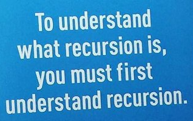

Recursion, see Recursion.
February 18, 2016
While poking around blogs and articles as I began my coding journey, I kept seeing jokes like this:
I felt like an idiot not understanding this, so I decided to do some research.
Recursion is the process of repeating an item in a way that keeps repeating a part of itself. Recursion occurs in a function or method that calls on itself inside of itself. A few real world examples include:
- when two mirrors are facing each other and they keep reflecting each other forever
- a painting of a painting holding the same painting
- a dream inside of a dream, like in the movie Inception
The classic example in programming is the factorial. The function calls itself recursively on a smaller version of the input, n - 1. Notice the method call for factorial inside the method itself. Here is a factorial in Ruby:
def factorial(n)
if n == 0
1
else
n * factorial(n-1)
end
end
The factorial example illustrates how recursion happens when a function is made up of smaller versions of itself.
The kicker?
To ensure your function doesn't run forever and ever, you must incorporate a "kick". A recursive function is comprised of two parts: the terminating condition and the recursive part. The terminating condition, or kick, tells your function when to stop so it does not infinitely loop. The kick in the factorial example above is the "if n == 0" condition. This returns a value which stops the recursion because it kicks the function out of the repeating loop.
Pros and cons to recursion:
In most cases, iteration is preferred over recursion. This is because a recursive function uses a LOT of memory. In general, each time any language calls a function, space is carved out in the stack for the function's arguments and local variables. If a function is calling itself, it will carve out more space each time the function is called, which happens over and over in recursion. This makes the program vulnerable to running out of memory and crashing. The crash happens due to a stack overflow, which is basically when a program attempts to use more space than is available. The major pro to using recursion is how short and efficient the code can look. While it may be a more elegant solution, the toll it takes on the stack may not always be worth it.